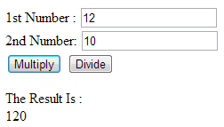

Write a JavaScript program to display the current day and time in the following format.
Sample Output : Today is : Friday.
Current time is : 4 PM : 50 : 22
Write a JavaScript program to print the contents of the current window.
Write a JavaScript program to get the current date.
Expected Output : mm-dd-yyyy, mm/dd/yyyy or dd-mm-yyyy, dd/mm/yyyy
Write a JavaScript program to find the area of a triangle where lengths of the three of its sides are 5, 6, 7.
Write a JavaScript program to rotate the string 'w3resource' in right direction by periodically removing one letter from the end of the string and attaching it to the front.
Write a JavaScript program to determine whether a given year is a leap year in the Gregorian calendar.
Write a JavaScript program to find 1st January is being a Sunday between 2014 and 2050.
Write a JavaScript program where the program takes a random integer between 1 to 10, the user is then prompted to input a guess number. If the user input matches with guess number, the program will display a message "Good Work" otherwise display a message "Not matched".
Write a JavaScript program to calculate days left until next Christmas.
Write a JavaScript program to calculate multiplication and division of two numbers (input from user).
Sample form :
Write a JavaScript program to convert temperatures to and from celsius, fahrenheit.
[ Formula : c/5 = (f-32)/9 [ where c = temperature in celsius and f = temperature in fahrenheit ]
Expected Output :
60°C is 140 °F
45°F is 7.222222222222222°C
Write a JavaScript program to get the website URL (loading page).